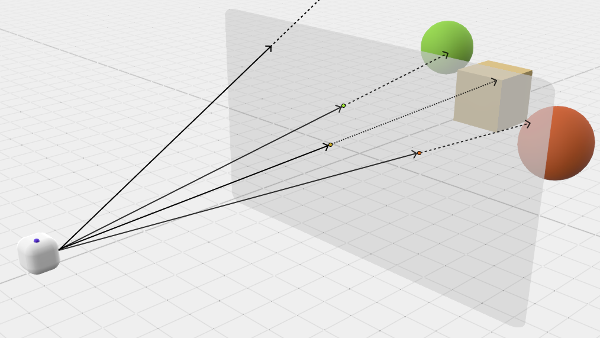

Controles:
- Teclas +/-: Ampliar o reducir el zoom
- Flechas: Desplazarse por el espacio
Ayuda
En los siguientes párrafos se explica de forma intuitiva el significado y el efecto provocado por cada uno de los parámetros modificables. Previamente, explicamos algunas nociones sobre los algoritmos utilizados para visualizar estas escenas.
El algoritmo utilizado para graficar una escena 3D es 'Ray-Tracing', el cual consiste en imaginar la escena que queremos visualizar, que en este caso está compuesta por un plano con textura de tablero de ajedrez y un fractal 3D, y desde una posición que tomamos como punto de vista posicionar un plano el cual identificamos con la pantalla y dividimos en píxeles (este plano se denomina 'plano de proyección'). Posteriormente, se 'trazan rayos' hacia la escena, uno por cada píxel. En caso de intersección con algún objeto, se colorea el píxel del color asociado a la intersección.

La manera de calcular esta intersección es mediante el algoritmo conocido como 'Sphere-Tracing'. Este consiste en avanzar poco a poco a lo largo del rayo mediante estimaciones de la distancia a los objetos que componen la escena, hasta detectar que un punto del rayo se encuentra a una distancia muy pequeña del objeto, en cuyo caso decidiremos que hemos encontrado la intersección.
Veamos ahora el significado de cada parámetro.
Modo de uso
Esta página se puede usar de dos maneras debido al alto coste computacional que requiere aplicar 'sphere-tracing':
- Modo interactivo : La escena cambia conforme cambia cada parámetro. Es la opción más ilustrativa y en la que más se aprecian los cambios en los distintos parámetros, pero también la más costosa. No recomendamos usar este modo, o al menos no abusar de él con parámetros exigentes si el computador es antiguo o tiene una mala GPU.
- Modo a demanda: En este caso la escena no cambia al modificar los parámetros, aunque si cambian internamente. Una vez se han ajustado a nuestro gusto, se pulsa el botón Redibujar para que se grafique la escena con los nuevos parámetros.
Botón 'Reset'
Al pulsarlo se restablecen los parámetros a los iniciales, es decir, los que había al cargar la página por primera vez.
Botón 'Redibujar'
Al pulsarlo se dibuja la escena con los valores que tengan los parámetros en el momento que se pulsa. Cada vez que se redibuja la escena, sea por este botón o porque esté activo el modo interactivo, se actualiza el 'tiempo de procesado', que especifica el tiempo en milisegundos que tarda en procesarse el frame.
En general, se recomienda usar los parámetros estándar y el modo interactivo para moverse por la escena, y en el momento que se desee primar el realismo y la calidad de la imagen activar el modo a demanda, especificar parámetros concretos más exigentes y redibujar.
Parámetros del fractal
En la página de fractales 2D se explica la metodología para graficar conjuntos de Julia y Mandelbrot mediante iteración de números complejos. Para dar el salto a 3 dimensiones se utiliza una generalización de los complejos: los cuaternios, los cuales pueden identificarse con \(\mathbb R^4\), de forma que aquí representamos una proyección de los conjuntos de Julia y Mandelbrot 4-dimensionales en 3 dimensiones.
Se ofrece la posibilidad de elegir entre la visualización de los conjuntos de Julia y Mandelbrot fijando esta vez para los conjuntos de Julia una constante \(c=ix + jy + kz + w\), es decir, un cuaternio, 4 parámetros de libertad. También es posible visualizar el conjunto de Mandelbub, que es una generalización 3D del conjunto de Mandelbrot de orden 8, bastante más visual que el conjunto de Mandelbrot generalizado.
Recomendamos seleccionar la opción de visualizar conjuntos de Julia y modificar los parámetros de la constante \(c\), o abrir la página de fractales 2D y comparar el conjunto de Mandelbrot 2D con el 3D y el conjunto de Mandelbrot con exponente \(m=8\) con el conjunto de Mandelbub.
Ray-Tracing
En este apartado se eligen parámetros que se relacionan directamente con el algoritmo utilizado para la visualización de la escena, no tanto con el fractal. Dividimos la sección en tres subapartados:
Posición actual (coordenadas cartesianas)
La escena está dotada de una cámara orbital que se mueve mirando siempre de forma fija al punto \((0,0,0)\), que es donde están fijados todos los fractales. Así, cada vez que se pulsan las flechas o las teclas '+/-' el movimiento se hace en la cámara orbital y en torno al punto origen. En este conjunto de parámetros se especifican las coordenadas cartesianas del punto en el cual se sitúa el observador en cada momento, pudiendo modificar la posición a nuestro gusto, pero siempre mirando al punto \((0,0,0)\).
Recomendamos modificar libremente estos valores para poder observar los fractales desde distintos puntos de vista.
Epsilon
Anteriormente, cuando hemos explicado Sphere-Tracing, hemos mencionado que si se detecta que un punto está a una distancia muy pequeña de la superficie de algún objeto, entonces se considera que pertenece a esa superficie. Denominamos \(\varepsilon\) a esa distancia, la cual damos en este apartado la posibilidad de parametrizar. En general, tomando \(\varepsilon=10^{-3}\) se obtienen resultados bastante buenos.
Obsérvese cómo cambian el suelo, los fractales y su nivel de detalle al variar el valor de \(\varepsilon\).
CUIDADO: Cuanto menor sea esta cantidad mayor será la precisión y mejor la aproximación, pero también implica más carga de trabajo, por lo que no recomendamos utilizar el valor más pequeño ofrecido (que es \(10^{-4}\)) en modo interactivo en comunión con SSAA con un alto número de rayos por píxel o con las sombras activadas.
Supersampling Antialiasing
Anteriormente hemos mencionado que se identifica cada píxel con un único punto del plano de proyección, pero esto suele provocar calidades bajas y bordes bruscos. Con este parámetro se permite identificar cada píxel con \(n^2\) puntos, lanzar un rayo hacia cada punto, calcular el color asociado a cada rayo y finalmente asignar al píxel el color promedio. De esta forma se visualizan los bordes más suavizados y se obtienen imágenes de mayor calidad. Esta técnica se conoce como Supersampling Antialiasing (SSAA).
Recomendamos activar simultáneamente las sombras arrojadas, activar el antialiasing con un número alto de rayos por píxel y redibujar, el cambio es fácilmente notable (este procesado es lento y costoso, no recomendable usar el modo interactivo).
CUIDADO: Esta operación es considerablemente más costosa que el visualizado estándar, por lo que recomendamos no abusar de la interactividad con un número alto de rayos por píxel si no se dispone de una gráfica suficientemente buena.
Modelo de iluminación
En este apartado se ajustan los parámetros asociados al modelo de iluminación aplicado a la escena. Primeramente, aclaramos que el material asociado al fractal es parametrizable, pudiendo modificar el color de sus componentes ambiental, difusa, especular y el exponente de brillo, que procedemos a explicar.
- Componente ambiental: Se aplica por igual a todos los puntos del objeto sin tener en cuenta las luces que lo alumbran. Algo así como el color base o el color que se observa en las sombras.
- Componente difusa: A grandes rasgos, es el color mate del objeto cuando la luz incide sobre él.
- Componente especular: Color de los brillos metalizados del objeto en caso de que se desee este efecto.
- Brillo: Intensidad del brillo, "cuánto reluce".
Es recomendable, para notar el efecto de cada componente, dejar en negro dos de ellas y darle color a la restante para observar qué función tiene.
Sobre las luces, la escena está dotada de dos fuentes de luz que alumbran desde arriba, una desde la derecha y otra desde la izquierda. Cada una de ellas permite parametrizar su color y si arroja o no sombras.
Recomendamos subir un poco en la escena, con la tecla de la flecha hacia arriba o aumentando la coordenada \(y\) del parámetro posición actual y activar y desactivar las sombras, para así poder ver los efectos de las sombras sobre el propio fractal y sobre el suelo.
CUIDADO: Arrojar sombras provoca un efecto muy realista pero también muy costoso, por lo que se recomienda no abusar del modo interactivo con las sombras activadas.

ADVERTENCIA
Como se ha mencionado anteriormente, es posible que su dispositivo no soporte interactividad de forma fluida si se usa simultáneamente SSAA con un número elevado de rayos por píxel, sombras arrojadas y/o un valor de \(\varepsilon\) muy pequeño. Recomendamos por ello usar el modo interactivo con SSAA y sombras desactivadas y \(\varepsilon=0.001\), pudiendo utilizar los movimientos de la cámara libremente (aunque tampoco es recomendable mantener las teclas pulsadas dependiendo de la GPU). Si se desea un nivel de detalle mayor, se recomienda activar el modo a demanda, los parámetros más exigentes y redibujar.
En caso de que la web se sobrecargue, es posible que se ponga en blanco la pantalla y aparezca un mensaje de error. No se preocupe, en este caso debe ser suficiente una simple recarga de la página para solucionarlo, aunque en ciertos casos puede ser necesario reiniciar el navegador.